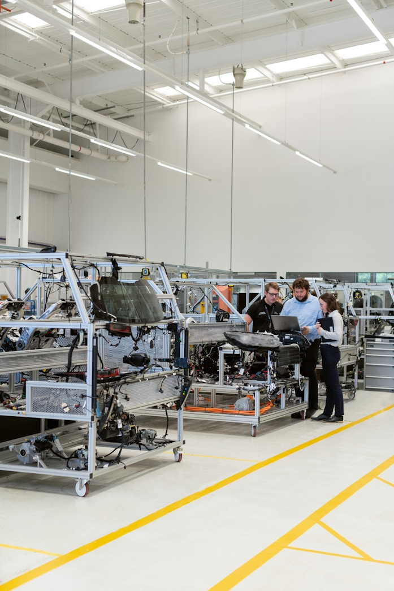
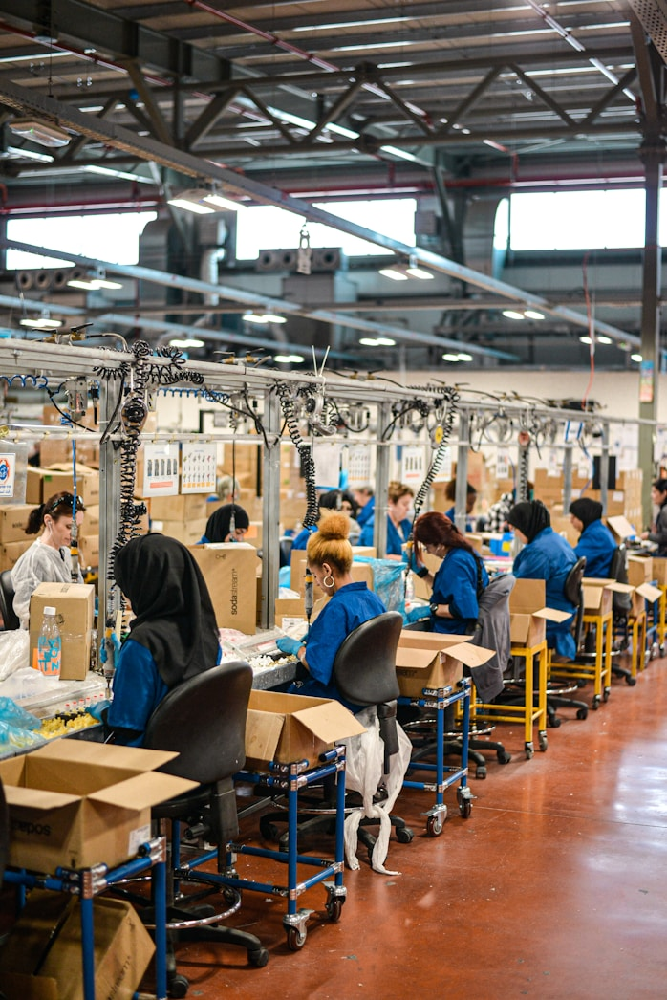
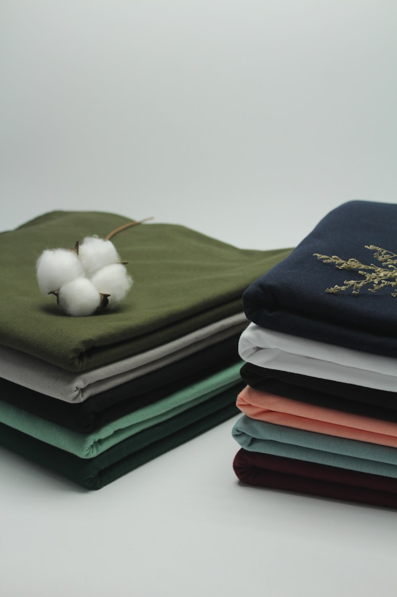
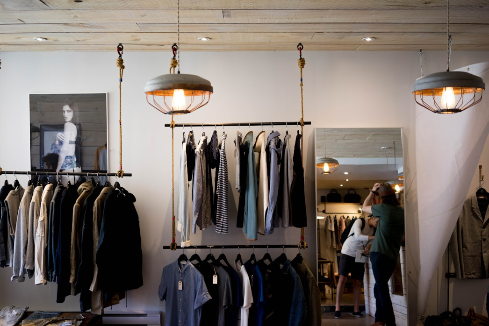
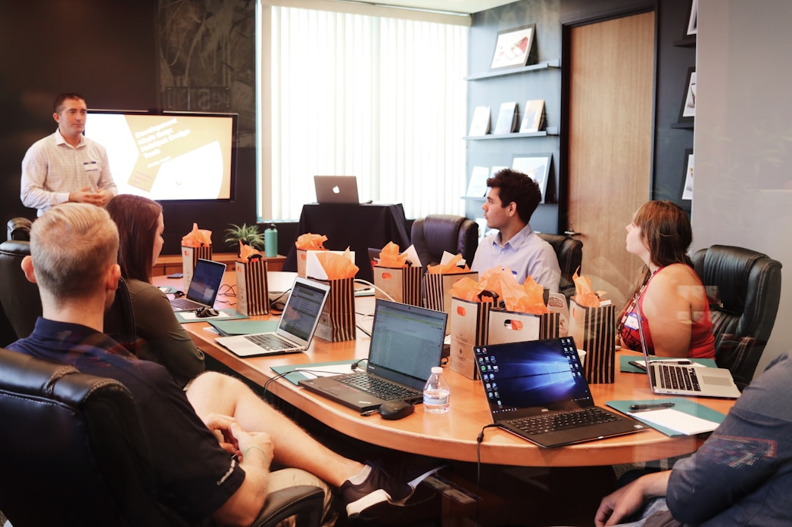

Manufacturing Built Around Partnership, Quality, and Reliability
More than a supplier, we are committed to helping brands build exceptional products through decades of combined industry expertise.
Every garment follows a carefully managed workflow. A structured process that transforms ideas into premium apparel through every stage of development and production, ensuring quality, consistency, and timely delivery.
Exceptional manufacturing is built on more than production capacity. It requires trusted partnerships, disciplined execution, and an unwavering commitment to quality. These principles guide every project we undertake and every relationship we build.

More than a supplier, we are committed to helping brands build exceptional products through decades of combined industry expertise.

From product development and sourcing to production, quality assurance, packaging, and logistics, we manage every stage creating a seamless experience.

We combine Peru's renowned textile heritage with a trusted supplier network to source premium high-quality fabrics and carefully selected materials that elevate every garment.

Quality is embedded throughout our manufacturing process. Supported by WRAP Certification, standardized quality controls, and rigorous inspections, we deliver products that meet international expectations.

With manufacturing in Peru and strategic operations in Miami, we provide brands with efficient communication and streamlined worldwide logistics support across international markets.
Reliable production schedules with flexible capacity to meet seasonal programs and replenishment orders.

Every successful garment begins with an idea. We help transform concepts into products ready for retail through collaborative development and precision manufacturing.
Contact Us